Test version: not released yetVersion de test : pas encore lancée
This page is for the testers of a version that is not released. Please do not share the link or cite it. The window, its options and its outputs can still change from one day to the next, and some of what it measures has not been validated yet: check the velocities against your usual ones before using them.
Cette page s'adresse aux testeurs d'une version qui n'est pas lancée. Merci de ne pas diffuser le lien ni le citer. La fenêtre, ses options et ses produits peuvent encore changer d'un jour à l'autre, et une partie de ce qu'elle mesure n'est pas encore validée : comparez les vitesses à celles que vous avez d'habitude avant de vous en servir.
In shortEn bref
LBL (line-by-line, Artigau et al. 2022) measures radial
velocities line by line against a template of the star, and combines
thousands of lines into one velocity per exposure, resilient to outliers.
The lbl-pca2d branch adds PCA2D, a
precleaning step: it separates what moves with the star from what stays
fixed on the detector (telluric residuals, airglow, detector features),
divides the latter out of the spectra, and LBL then measures the corrected
spectra. The report shows the velocities before and after.
lbl-gui is a window in your browser that writes an ordinary LBL script (a wrap) from what you tick, runs it in the environment LBL is installed in, and follows it: the steps, the log, the reports. Nothing it does is hidden: every run keeps its wrap, which runs by hand as it is.
Three pieces, three repositories, one conda environment:
- LBL, branch
lbl-pca2d(github.com/njcuk9999/lbl): the measurement and the precleaning. - lbl-gui (github.com/eartigau/lbl-pca2d-gui): the window.
- koloa, optional (github.com/eartigau/koloa): the search of the public archives from the window.
LBL (line-by-line, Artigau et al. 2022) mesure les
vitesses radiales raie par raie contre un template de l'étoile, et combine
des milliers de raies en une vitesse par pose, de façon robuste aux valeurs
aberrantes. La branche lbl-pca2d y ajoute PCA2D,
un prénettoyage : il sépare ce qui bouge avec l'étoile de ce qui reste fixe
sur le détecteur (résidus telluriques, émission du ciel, défauts du
détecteur), divise ces derniers hors des spectres, puis LBL mesure les
spectres corrigés. Le rapport montre les vitesses avant et après.
lbl-gui est une fenêtre dans votre navigateur qui écrit un script LBL ordinaire (un wrap) à partir de ce que vous cochez, le lance dans l'environnement où LBL est installé, et le suit : les étapes, le journal, les rapports. Rien n'est caché : chaque run garde son wrap, qui se relance tel quel à la main.
Trois morceaux, trois dépôts, un seul environnement conda :
- LBL, branche
lbl-pca2d(github.com/njcuk9999/lbl) : la mesure et le prénettoyage. - lbl-gui (github.com/eartigau/lbl-pca2d-gui) : la fenêtre.
- koloa, facultatif (github.com/eartigau/koloa) : la recherche dans les archives publiques depuis la fenêtre.
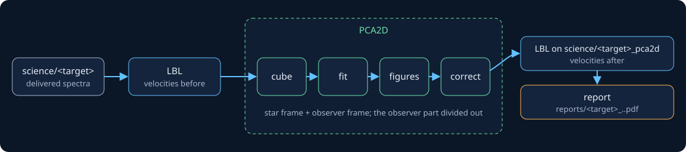
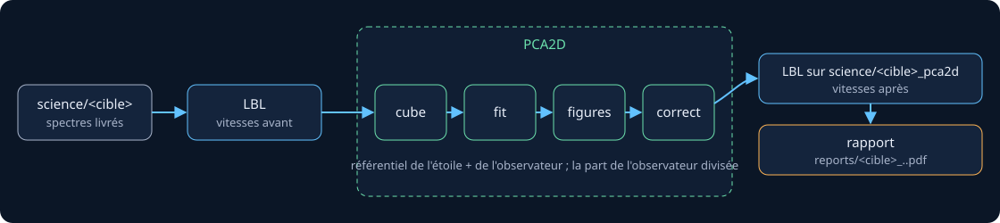
Before you startAvant de commencer
- conda and git.
- Python 3.12: LBL accepts no other version.
- pdflatex, optional: with it the reports are typeset documents; without it, the figures are bound into one PDF.
- Disk and memory. LBL writes its products beside the spectra; PCA2D builds a cube of all the spectra of a target, which for hundreds of exposures is several GB, and needs memory to fit it. On a laptop, nightly stacking (the default for NIRPS) keeps it small.
- macOS or Linux. The window is a web page served by your own machine: any recent browser.
- conda et git.
- Python 3.12 : LBL n'accepte pas d'autre version.
- pdflatex, facultatif : avec lui, les rapports sont des documents mis en page ; sans lui, les figures sont assemblées en un PDF.
- Disque et mémoire. LBL écrit ses produits à côté des spectres ; PCA2D construit un cube de tous les spectres d'une cible, qui pour des centaines de poses pèse plusieurs Go, et demande de la mémoire pour l'ajuster. Sur un portable, l'empilement par nuit (le défaut pour NIRPS) le garde petit.
- macOS ou Linux. La fenêtre est une page web servie par votre propre machine : n'importe quel navigateur récent.
InstallingInstallation
1. An environment for LBL. Everything goes in one conda environment: the window runs the wraps with its Python.
conda create -n lbl-pca2d python=3.12 conda activate lbl-pca2d
2. LBL, branch lbl-pca2d. Installed in
editable mode (-e), so that a git pull is all an
update takes.
git clone -b lbl-pca2d https://github.com/njcuk9999/lbl.git lbl-pca2d pip install -e lbl-pca2d
Already have a clone of LBL? Switch it to the branch instead:
cd lbl git fetch origin git checkout lbl-pca2d git pull pip install -e .
Check that Python finds this copy (the path printed is in your clone):
python -c "import lbl; print(lbl.__file__)"
3. The window, in the same environment:
git clone https://github.com/eartigau/lbl-pca2d-gui.git pip install -e lbl-pca2d-gui
4. Optional: the archive search. koloa fetches the
public spectra LBL reads (CADC, ESO, TNG, OHP). --no-deps keeps
pip from touching the versions LBL pins. Without koloa, the window says so
and everything else works.
git clone https://github.com/eartigau/koloa.git pip install --no-deps -e koloa
1. Un environnement pour LBL. Tout va dans un seul environnement conda : la fenêtre lance les wraps avec son Python.
conda create -n lbl-pca2d python=3.12 conda activate lbl-pca2d
2. LBL, branche lbl-pca2d. Installé en mode
éditable (-e), pour qu'un git pull suffise à le
mettre à jour.
git clone -b lbl-pca2d https://github.com/njcuk9999/lbl.git lbl-pca2d pip install -e lbl-pca2d
Vous avez déjà un clone de LBL ? Passez-le plutôt sur la branche :
cd lbl git fetch origin git checkout lbl-pca2d git pull pip install -e .
Vérifiez que Python trouve bien cette copie (le chemin affiché est dans votre clone) :
python -c "import lbl; print(lbl.__file__)"
3. La fenêtre, dans le même environnement :
git clone https://github.com/eartigau/lbl-pca2d-gui.git pip install -e lbl-pca2d-gui
4. Facultatif : la recherche d'archives. koloa récupère
les spectres publics que LBL sait lire (CADC, ESO, TNG, OHP).
--no-deps évite que pip touche aux versions fixées par LBL.
Sans koloa, la fenêtre le signale et tout le reste fonctionne.
git clone https://github.com/eartigau/koloa.git pip install --no-deps -e koloa
Step by step: a first runPas à pas : un premier run
The whole of a first run, click by click, on one example: the 214 public HARPS spectra of Gliese 229 (an M1 dwarf with planets), from the data folder to the report. The orange numbers on each screenshot are explained right under it.Un premier run en entier, clic par clic, sur un exemple : les 214 spectres HARPS publics de Gliese 229 (une naine M1 qui a des planètes), du dossier de données jusqu'au rapport. Les numéros orange de chaque capture sont expliqués juste dessous.
Prepare the data folderPréparer le dossier de données
Make a folder for LBL, with a science/ folder in it, and one folder per target holding its spectra. Here, the HARPS e2ds of three stars, and the blaze files of their nights in calib/:
Créez un dossier pour LBL, avec dedans un dossier science/, et un dossier par cible qui contient ses spectres. Ici, les e2ds HARPS de trois étoiles, et les fichiers de blaze de leurs nuits dans calib/ :
lbl-data/
science/
Gliese229/ HARPS.ADP.2014-...e2ds_A.fits (214 files)
HD189733/ ... (191 files)
GL699/ ... (12 files)
calib/ HARPS.2003-12-12T...blaze_A.fitsNo spectra yet? The window can fetch public ones for you: see step 11. Keep one instrument per target folder.
Pas encore de spectres ? La fenêtre peut récupérer des spectres publics pour vous : voir l'étape 11. Gardez un seul instrument par dossier de cible.
Start the windowLancer la fenêtre
In a terminal, activate the environment and start the window on that folder:
Dans un terminal, activez l'environnement et lancez la fenêtre sur ce dossier :
conda activate lbl-pca2d lbl-gui --data-dir ~/lbl-data
One line in the terminal, which then waits (leave it open):
lbl-gui 0.1.0 at http://127.0.0.1:8765/ (LBL from .../lbl-pca2d/lbl); Ctrl+C to stop
and the window opens in your browser. If it does not, open http://127.0.0.1:8765/ yourself.
Une ligne dans le terminal, qui attend ensuite (laissez-le ouvert) :
lbl-gui 0.1.0 at http://127.0.0.1:8765/ (LBL from .../lbl-pca2d/lbl); Ctrl+C to stop
et la fenêtre s'ouvre dans votre navigateur. Sinon, ouvrez vous-même http://127.0.0.1:8765/.
Read the targetsLire les cibles
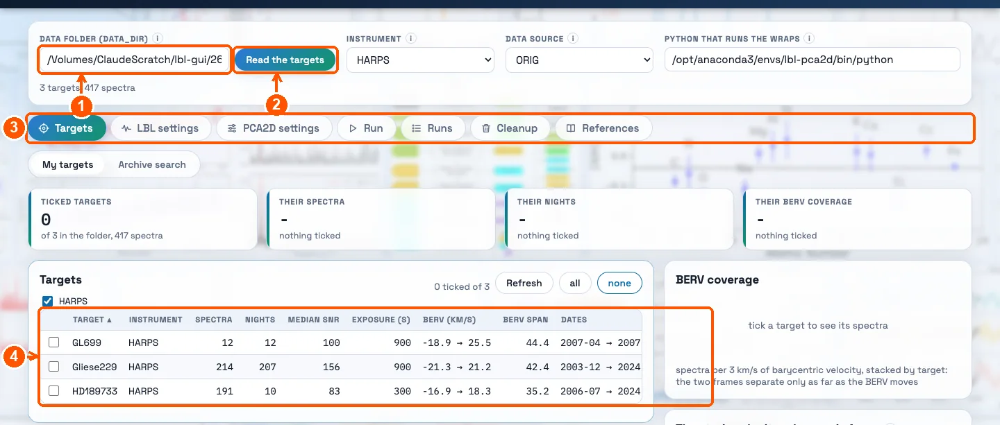
- 1 Data folder. The one given with
--data-dir; paste another path here to change. It is the folder that holdsscience/. - 2 Read the targets: reads the headers again (only new or changed files).
- 3 The tabs, left to right, are the order of the work.
- 4 The targets: one row per folder. A greyed row is still being read; wait until none is.
- 1 Dossier de données. Celui donné avec
--data-dir; collez un autre chemin ici pour en changer. C'est le dossier qui contientscience/. - 2 Lire les cibles : relit les en-têtes (seuls les fichiers nouveaux ou modifiés).
- 3 Les onglets, de gauche à droite, suivent l'ordre du travail.
- 4 Les cibles : une ligne par dossier. Une ligne grisée est en cours de lecture ; attendez qu'il n'y en ait plus.
Under the field: 3 targets, 417 spectra.
Sous le champ : 3 cibles, 417 spectres.
Tick the targetCocher la cible
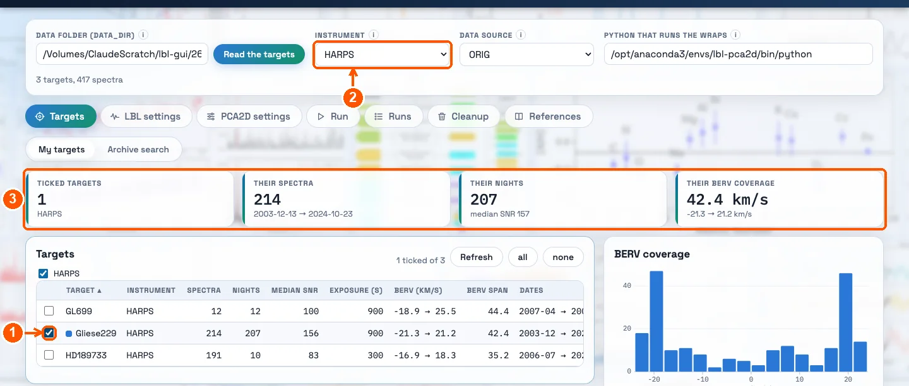
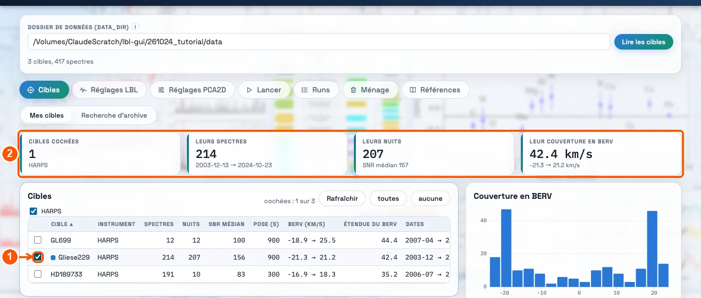
- 1 Tick the target to run. Several targets of one instrument can be ticked (a joint fit); two instruments cannot. The instrument and the data source are read from its files (you will check them in the next tab).
- 2 The banner now describes the ticked targets only: their spectra and dates, their nights and median SNR, the range of their BERV.
- 1 Cochez la cible à traiter. On peut cocher plusieurs cibles d'un même instrument (un fit joint), pas deux instruments. L'instrument et la source de données sont lus dans ses fichiers (vous les vérifierez à l'onglet suivant).
- 2 Le bandeau décrit maintenant les cibles cochées seulement : leurs spectres et leurs dates, leurs nuits et leur SNR médian, l'étendue de leur BERV.
1 target, 214 spectra from 2003-12-13 → 2024-10-23, 207 nights, median SNR 157, BERV from -21.3 → 21.2 km/s: 42.4 km/s of coverage.
1 cible, 214 spectres du 2003-12-13 → 2024-10-23, 207 nuits, SNR médian 157, BERV de -21.3 → 21.2 km/s : 42.4 km/s de couverture.
PCA2D tells the star from the atmosphere because the star moves on the detector with the BERV while the atmosphere stays: the wider the BERV range, the better they separate.
PCA2D distingue l'étoile de l'atmosphère parce que l'étoile bouge sur le détecteur avec le BERV alors que l'atmosphère reste fixe : plus l'étendue du BERV est grande, mieux elles se séparent.
Look at the plotsRegarder les graphiques
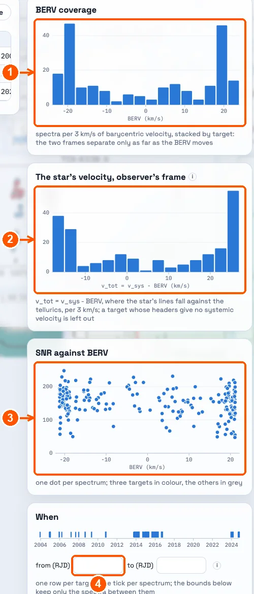
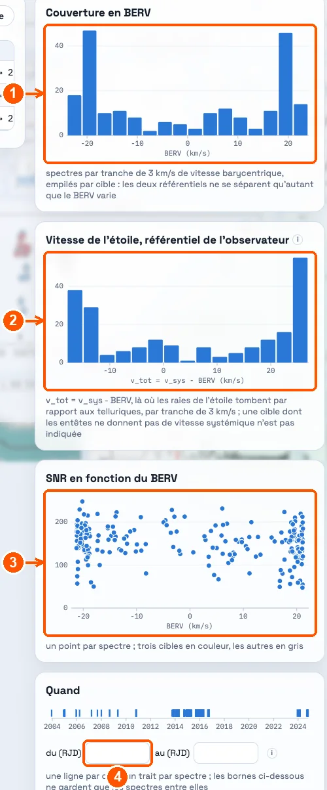
- 1 BERV coverage: how many spectra per 3 km/s of BERV.
- 2 The star's velocity in the observer's frame (v_tot = v_sys - BERV): where its lines fall against the telluric lines.
- 3 SNR against BERV: one dot per spectrum.
- 4 Date bounds (RJD): restrict the PCA2D fit to a stretch of time. Leave them empty in the example.
- 1 Couverture en BERV : combien de spectres par tranche de 3 km/s de BERV.
- 2 Vitesse de l'étoile dans le référentiel de l'observateur (v_tot = v_sys - BERV) : là où ses raies tombent par rapport aux raies telluriques.
- 3 SNR en fonction du BERV : un point par spectre.
- 4 Bornes de dates (RJD) : limitent le fit PCA2D à une période. Laissez-les vides dans l'exemple.
LBL settingsRéglages LBL
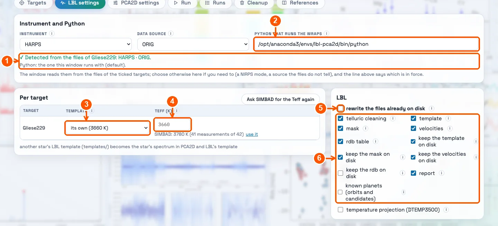
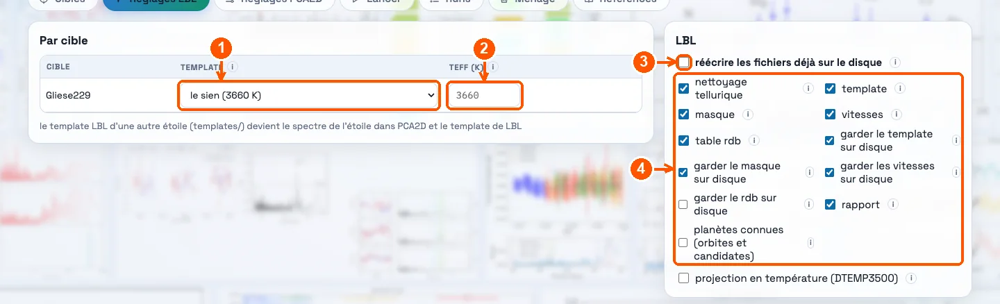
- 1 Instrument and data source: detected from the ticked files, the green line says so (here HARPS · ORIG). You can choose others in the two menus above it (a NIRPS mode, a source the files do not tell): the line then turns orange, says what the files say, and Use the detection brings it back.
- 2 Python that runs the wraps: the one of the window by default; type another only to run in another environment.
- 3 Template: what each exposure is measured against. Keep its own for a star with many spectra; for a star with few, choose another star's of a similar type.
- 4 Teff: read from the headers (grey). Type a value only to override it.
- 5 Rewrite the files already on disk: leave it unticked the first time. Tick it when you run again after changing the spectra, the template or the mask.
- 6 The steps: all ticked by default. For HARPS the telluric cleaning is on; for NIRPS and SPIRou it is off and locked (their pipeline corrects the tellurics).
- 1 Instrument et source de données : détectés d'après les fichiers cochés, la ligne verte le dit (ici HARPS · ORIG). Vous pouvez en choisir d'autres dans les deux menus au-dessus (un mode de NIRPS, une source que les fichiers ne disent pas) : la ligne devient orange, dit ce que disent les fichiers, et Revenir à la détection la remet.
- 2 Python qui lance les wraps : celui de la fenêtre par défaut ; n'en tapez un autre que pour tourner dans un autre environnement.
- 3 Template : ce contre quoi chaque pose est mesurée. Gardez le sien pour une étoile qui a beaucoup de spectres ; pour une étoile qui en a peu, choisissez celui d'une autre étoile de type voisin.
- 4 Teff : lue dans les en-têtes (en gris). Tapez une valeur seulement pour la remplacer.
- 5 Réécrire les fichiers déjà sur le disque : laissez-la décochée la première fois. Cochez-la quand vous relancez après avoir changé les spectres, le template ou le masque.
- 6 Les étapes : toutes cochées par défaut. Pour HARPS, le nettoyage tellurique est actif ; pour NIRPS et SPIRou il est désactivé et bloqué (leur pipeline corrige déjà les telluriques).
HARPS · ORIG detected, template its own (3660 K), Teff 3660 K from the headers, nothing else changed.
HARPS · ORIG détectés, template le sien (3660 K), Teff 3660 K lue dans les en-têtes, rien d'autre de changé.
PCA2D settingsRéglages PCA2D
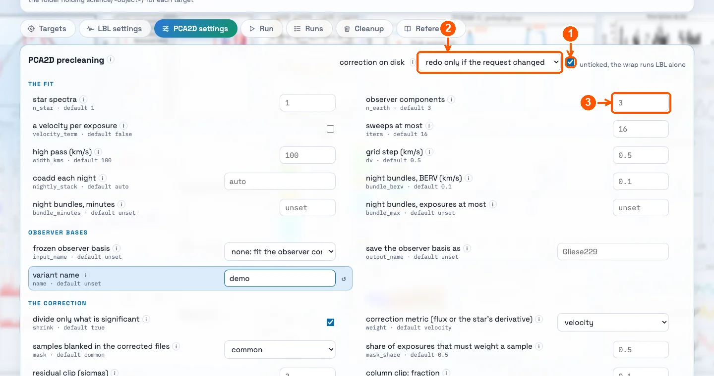
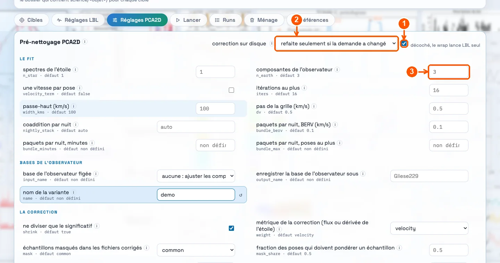
- 1 PCA2D on (ticked by default). Unticked, the run is LBL alone, on the delivered spectra.
- 2 A correction already on disk: redone only if the request changed (the default). Leave it.
- 3 Observer components (n_earth): how many patterns fixed on the detector are fitted. 3 by default; leave it for a first run.
- 1 PCA2D actif (coché par défaut). Décoché, le run est LBL seul, sur les spectres livrés.
- 2 Une correction déjà sur le disque : refaite seulement si la demande a changé (le défaut). Laissez-le.
- 3 Composantes de l'observateur (n_earth) : combien de motifs fixes sur le détecteur sont ajustés. 3 par défaut ; gardez-le pour un premier run.
Every option has a (i) that says what it does, and its default under its name. The reference at the end of this page lists them all.
Chaque option a un (i) qui dit ce qu'elle fait, et son défaut sous son nom. La référence à la fin de cette page les décrit toutes.
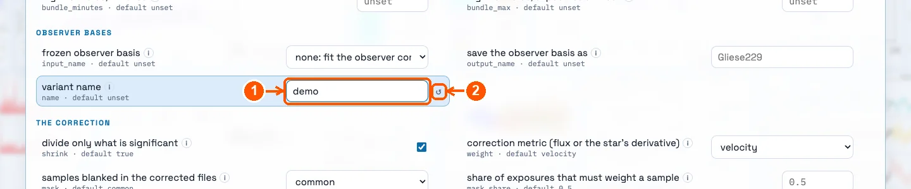
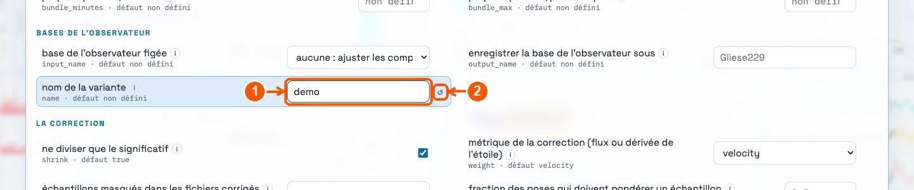
- 1 Variant name: type a short name (here
demo). It names the run and the corrected spectra, so that two variants never overwrite each other. - 2 ↺ puts the option back to its default.
- 1 Nom de la variante : tapez un nom court (ici
demo). Il nomme le run et les spectres corrigés, pour que deux variantes ne s'écrasent jamais. - 2 ↺ remet l'option à son défaut.
A changed option is highlighted in blue, and it is the only kind of option written into the wrap.
Une option changée est surlignée en bleu, et seules les options changées sont écrites dans le wrap.
Check and runVérifier et lancer
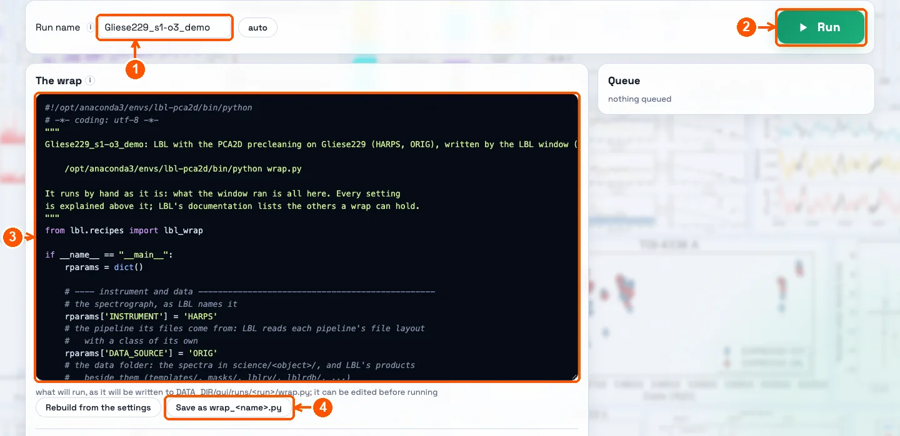
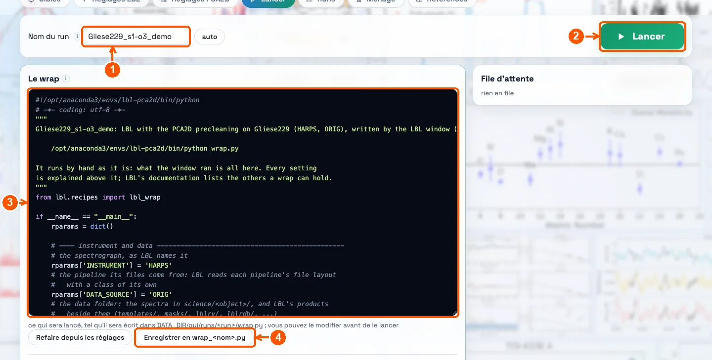
- 1 Run name: made from the target and the settings (
Gliese229_s1-o3_demo: 1 star component, 3 observer components, variant demo). Type another if you like; auto brings it back. - 2 Run: starts the run.
- 3 The wrap: the Python script that will run, every setting explained above it. You can read it, and edit it if you know what you are doing.
- 4 Save: keeps it as
wrap_<name>.pyin the data folder, to run later without the window.
- 1 Nom du run : fait de la cible et des réglages (
Gliese229_s1-o3_demo: 1 composante de l'étoile, 3 de l'observateur, variante demo). Tapez-en un autre si vous voulez ; auto le remet. - 2 Lancer : démarre le run.
- 3 Le wrap : le script Python qui va tourner, chaque réglage expliqué au-dessus. Vous pouvez le lire, et le modifier si vous savez ce que vous faites.
- 4 Enregistrer : le garde en
wrap_<nom>.pydans le dossier de données, pour le relancer plus tard sans la fenêtre.
If something is wrong (a missing template, two instruments ticked, a data source that does not fit the files) the window says so in red above the wrap and refuses to run. Fix what it says and click again.
Si quelque chose ne va pas (un template manquant, deux instruments cochés, une source de données qui ne correspond pas aux fichiers), la fenêtre le dit en rouge au-dessus du wrap et refuse de lancer. Corrigez ce qu'elle dit et recliquez.
Follow the runSuivre le run
- 1 The button turns orange and says which step is running. A click now queues another run, after this one.
- 1 Le bouton devient orange et dit quelle étape tourne. Un clic maintenant met un autre run en file, après celui-ci.
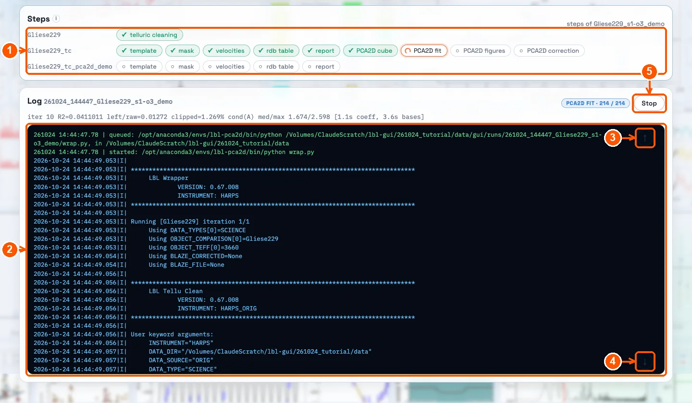
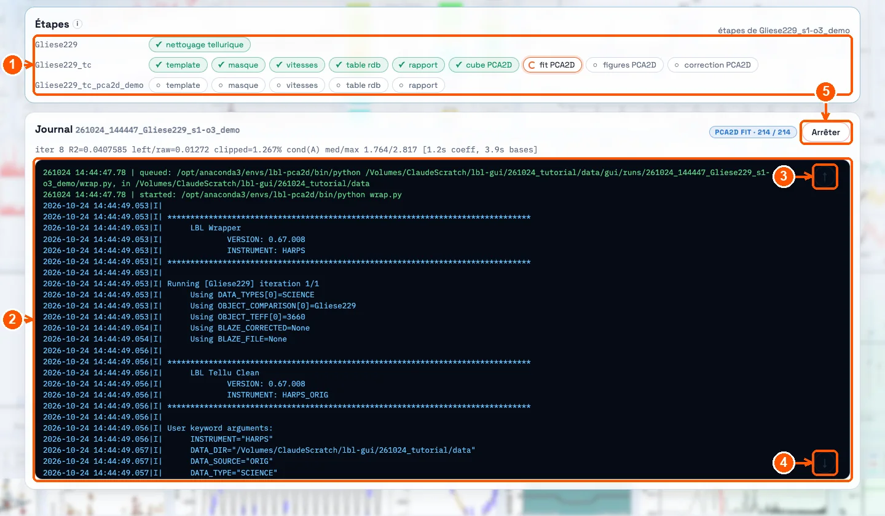
- 1 The steps, ticked as they end (a spinner on the one running). One line per object: the delivered spectra (here cleaned of tellurics:
_tc), then the corrected ones (_tc_pca2d_demo). Click a step to jump to its place in the log. - 2 The log: everything LBL and PCA2D print.
- 3 ↑ to the start of the log (it then stops following the run).
- 4 ↓ to the end (it follows again).
- 5 Stop stops the run.
- 1 Les étapes, cochées à mesure qu'elles finissent (une roue sur celle qui tourne). Une ligne par objet : les spectres livrés (ici nettoyés des telluriques :
_tc), puis les corrigés (_tc_pca2d_demo). Cliquez sur une étape pour aller à sa place dans le journal. - 2 Le journal : tout ce qu'impriment LBL et PCA2D.
- 3 ↑ vers le début du journal (il cesse alors de suivre le run).
- 4 ↓ vers la fin (il le suit de nouveau).
- 5 Arrêter arrête le run.
On a laptop (Apple M5, 16 GB), the 214 spectra took about 45 minutes in all: 11 for the telluric cleaning and LBL on the delivered spectra, 10 for PCA2D (cube, fit, figures, correction), 24 for LBL on the corrected spectra and the report.
Sur un portable (Apple M5, 16 Go), les 214 spectres ont pris environ 45 minutes en tout : 11 pour le nettoyage tellurique et LBL sur les spectres livrés, 10 pour PCA2D (cube, fit, figures, correction), 24 pour LBL sur les spectres corrigés et le rapport.
You can close the browser, and even the window (Ctrl+C): the run goes on. Start lbl-gui again on the same folder and it finds the run where it is.
Vous pouvez fermer le navigateur, et même la fenêtre (Ctrl+C) : le run continue. Relancez lbl-gui sur le même dossier et elle retrouve le run où il en est.
Read the resultsLire les résultats
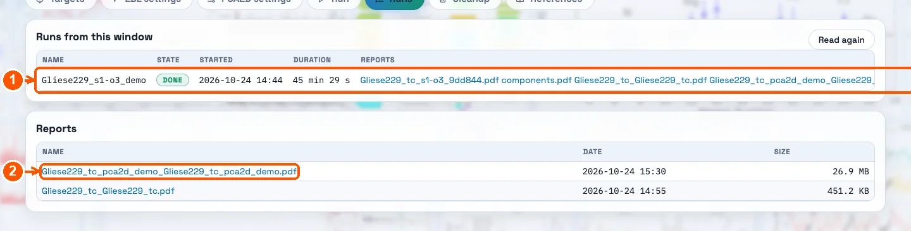
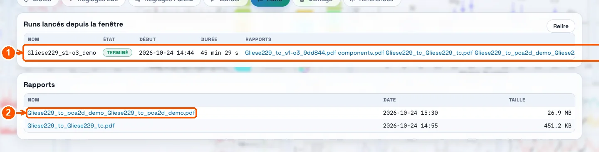
- 1 The run, its state, when it started and how long it took.
- 2 The report: click to open the PDF.
- 1 Le run, son état, son début et sa durée.
- 2 Le rapport : cliquez pour ouvrir le PDF.
The velocities are in lblrdb/lbl_Gliese229_tc_pca2d_demo_Gliese229_tc_pca2d_demo.rdb, one row per exposure (lbl2_: per night). A few of its columns: the date (rjd, BJD - 2400000), the velocity and its error (vrad, svrad, in m/s, the systemic velocity included), and d2v (m²/s²), the line-width indicator:
rjd vrad svrad d2v
52986.7541 4693.99 0.78 -208496
53341.8225 4693.14 0.61 -178665
53366.7422 4691.75 0.45 -190416
53370.7396 4692.95 0.49 -189123
53372.6970 4692.73 0.52 -200144
... ... ... ...Les vitesses sont dans lblrdb/lbl_Gliese229_tc_pca2d_demo_Gliese229_tc_pca2d_demo.rdb, une ligne par pose (lbl2_ : par nuit). Quelques-unes de ses colonnes : la date (rjd, BJD - 2400000), la vitesse et son erreur (vrad, svrad, en m/s, vitesse systémique comprise), et d2v (m²/s²), l'indicateur de largeur des raies :
rjd vrad svrad d2v
52986.7541 4693.99 0.78 -208496
53341.8225 4693.14 0.61 -178665
53366.7422 4691.75 0.45 -190416
53370.7396 4692.95 0.49 -189123
53372.6970 4692.73 0.52 -200144
... ... ... ...Open the report. With PCA2D its first section, right after the contents, is the velocity series:
Ouvrez le rapport. Avec PCA2D, sa première section, juste après la table des matières, est la série temporelle des vitesses :
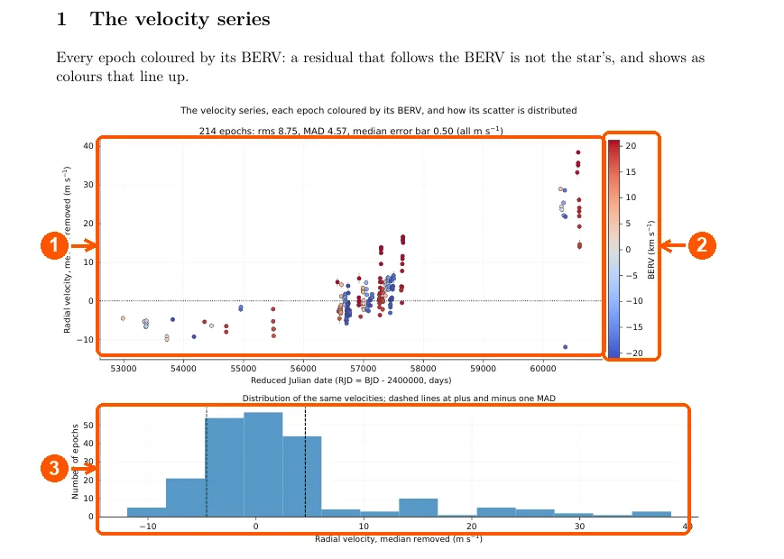
- 1 Every exposure's velocity, the median taken out, coloured by its BERV.
- 2 The colour scale of the BERV (km/s). A residual that follows the BERV is not the star's: it shows as colours that line up (all the reds high, all the blues low).
- 3 How the velocities are spread, with the dashed lines at plus and minus one robust sigma (MAD).
- 1 La vitesse de chaque pose, la médiane retirée, colorée selon son BERV.
- 2 L'échelle de couleur du BERV (km/s). Un résidu qui suit le BERV ne vient pas de l'étoile : il se voit comme des couleurs qui s'alignent (tous les rouges en haut, tous les bleus en bas).
- 3 La distribution des vitesses, avec en tirets plus et moins un sigma robuste (MAD).
A few pages further, the summary says what the correction changed:
Quelques pages plus loin, le résumé dit ce que la correction a changé :
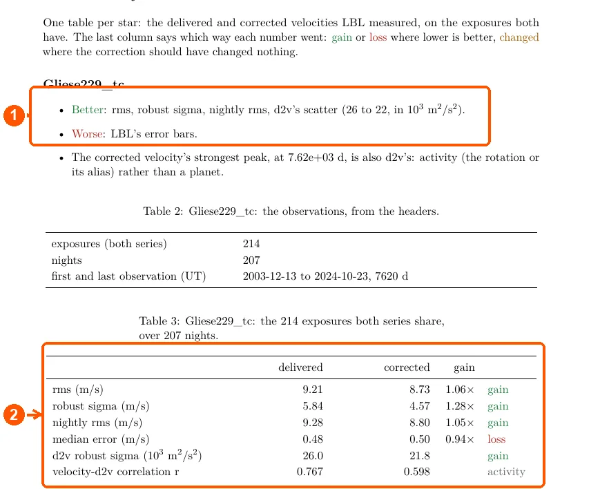
- 1 In words: what got better (green), worse (red), or changed where nothing should have.
- 2 In numbers: the delivered and the corrected velocities side by side, on the same exposures.
- 1 En mots : ce qui s'est amélioré (vert), dégradé (rouge), ou a changé là où rien n'aurait dû bouger.
- 2 En chiffres : les vitesses livrées et corrigées côte à côte, sur les mêmes poses.
Gliese 229, 214 exposures: the robust sigma goes from 5.84 to 4.57 m/s (1.28 times better), the rms from 9.21 to 8.73 m/s; the error bars barely move (0.48 to 0.50 m/s).
Gliese 229, 214 poses : le sigma robuste passe de 5,84 à 4,57 m/s (1,28 fois mieux), le rms de 9,21 à 8,73 m/s ; les barres d'erreur bougent à peine (0,48 à 0,50 m/s).
Optional: fetch public spectraFacultatif : récupérer des spectres publics
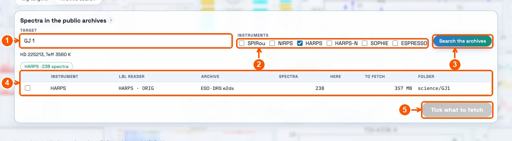
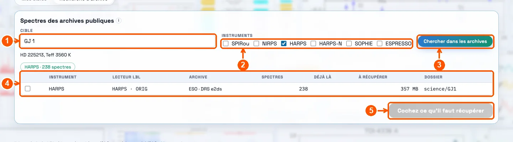
In the Targets tab, sub-tab Archive search (koloa must be installed):
Dans l'onglet Cibles, sous-onglet Recherche d'archive (koloa doit être installé) :
- 1 The star's name, as SIMBAD knows it (here
GJ 1, which SIMBAD calls HD 225213). - 2 The instruments to ask (here HARPS only).
- 3 Search the archives.
- 4 What was found: per instrument, how many spectra, the LBL reader that will read them, the archive, how many are already here, how much to download, and the folder they will go to. Tick the rows to fetch.
- 5 Fetch: downloads them into
science/, four files at a time, a bar per folder with how far it is and its time left, without ever moving or overwriting a file. The target then appears in My targets.
- 1 Le nom de l'étoile, tel que SIMBAD le connaît (ici
GJ 1, que SIMBAD appelle HD 225213). - 2 Les instruments à interroger (ici HARPS seulement).
- 3 Chercher dans les archives.
- 4 Ce qui a été trouvé : par instrument, combien de spectres, le lecteur LBL qui les lira, l'archive, combien sont déjà là, combien télécharger, et le dossier où ils iront. Cochez les lignes à récupérer.
- 5 Récupérer : les télécharge dans
science/, quatre fichiers à la fois, une barre par dossier avec où il en est et le temps qui lui reste, sans jamais déplacer ni écraser un fichier. La cible apparaît ensuite dans Mes cibles.
While a search goes, Stop the search takes the place of Search: an archive that does not answer no longer holds the others up. Under the results, What the search and the fetch are doing says who was asked, what each archive answered and in how long, and why a file was not fetched.
Pendant une recherche, Arrêter la recherche prend la place de Chercher : une archive qui ne répond pas ne retient plus les autres. Sous les résultats, Ce que font la recherche et le téléchargement dit qui a été interrogé, ce que chaque archive a répondu et en combien de temps, et pourquoi un fichier n'a pas été récupéré.
Run again, differentlyRelancer, autrement
- A variant: change an option (for example n_earth to 5), give it another name (
demo5), run. The first one is kept beside it; the report says which is which. - More spectra arrived: put them in the target's folder, Refresh, tick rewrite the files already on disk, run.
- From a terminal: every run kept its wrap,
python DATA_DIR/gui/runs/<run>/wrap.py. - Disk space: the Cleanup tab deletes what can be made again (cubes, corrected spectra, per-exposure velocities), never the spectra nor the results.
- Une variante : changez une option (par exemple n_earth à 5), donnez-lui un autre nom (
demo5), lancez. La première est gardée à côté ; le rapport dit laquelle est laquelle. - De nouveaux spectres sont arrivés : mettez-les dans le dossier de la cible, Rafraîchir, cochez réécrire les fichiers déjà sur le disque, lancez.
- Depuis un terminal : chaque run a gardé son wrap,
python DATA_DIR/gui/runs/<run>/wrap.py. - L'espace disque : l'onglet Ménage supprime ce qui peut être refait (cubes, spectres corrigés, vitesses par pose), jamais les spectres ni les résultats.
ReferenceRéférence
Every part of the window, every option, every file a run writes.Chaque partie de la fenêtre, chaque option, chaque fichier qu'un run écrit.
The data folderLe dossier de données
LBL works in one folder, DATA_DIR. Each target is a
subfolder of science/ that holds its spectra:
DATA_DIR/
science/
TOI-1234/ the spectra of one target
GJ_1028/
calib/ blaze files, for the instruments that need them
LBL creates everything else beside them on its first run
(templates/, masks/, lblrv/,
lblrdb/, models/, reports/...) and
downloads its models (the TAPAS atmosphere, the line masks). The window adds
gui/runs/, and PCA2D pca2d/.
Which files. What the instrument's pipeline delivers,
for example APERO's or the CADC's t.fits for SPIRou and NIRPS,
ESO's telluric-corrected S2D for NIRPS, the DRS e2ds for HARPS
(with the blaze of the night in calib/). One folder holds one
instrument and one pipeline: the window reads which from the files
themselves, sets the instrument and the data source to match, and refuses a
run whose source does not fit the files (the CADC's t.fits read
as APERO's stop LBL on its first file).
The instruments LBL reads, and their data sources:
| INSTRUMENT | DATA_SOURCE |
|---|---|
SPIROU | APERO · CADC |
NIRPS_HA | APERO · CADC · ESO |
NIRPS_HE | APERO · CADC · ESO |
HARPS | ORIG · ESO · ESSP |
CARMENES | None |
ESPRESSO | None |
HARPSN | ORIG · ESO · ESSP |
MAROONX | RED · BLUE |
SOPHIE | None |
CORALIE | None |
EXPRES | ORIG · ESSP |
NEID | ESSP |
ESPADONS | CADC |
Generic | None |
LBL travaille dans un dossier, DATA_DIR. Chaque cible est un
sous-dossier de science/ qui contient ses spectres :
DATA_DIR/
science/
TOI-1234/ les spectres d'une cible
GJ_1028/
calib/ les fichiers de blaze, pour les instruments qui en ont besoin
LBL crée tout le reste à côté à son premier run (templates/,
masks/, lblrv/, lblrdb/,
models/, reports/...) et télécharge ses modèles
(l'atmosphère TAPAS, les masques de raies). La fenêtre ajoute
gui/runs/, et PCA2D pca2d/.
Quels fichiers. Ce que livre le pipeline de
l'instrument, par exemple les t.fits d'APERO ou de la CADC pour
SPIRou et NIRPS, les S2D corrigés des telluriques d'ESO pour NIRPS, les
e2ds du DRS pour HARPS (avec le blaze de la nuit dans
calib/). Un dossier contient un seul instrument et un seul
pipeline : la fenêtre les reconnaît d'après les fichiers eux-mêmes, règle
l'instrument et la source de données en conséquence, et refuse un run dont
la source ne correspond pas aux fichiers (les t.fits de la CADC
lus comme ceux d'APERO arrêtent LBL dès le premier fichier).
Les instruments que LBL sait lire, et leurs sources de données :
| INSTRUMENT | DATA_SOURCE |
|---|---|
SPIROU | APERO · CADC |
NIRPS_HA | APERO · CADC · ESO |
NIRPS_HE | APERO · CADC · ESO |
HARPS | ORIG · ESO · ESSP |
CARMENES | None |
ESPRESSO | None |
HARPSN | ORIG · ESO · ESSP |
MAROONX | RED · BLUE |
SOPHIE | None |
CORALIE | None |
EXPRES | ORIG · ESSP |
NEID | ESSP |
ESPADONS | CADC |
Generic | None |
Starting the windowLancer la fenêtre
conda activate lbl-pca2d lbl-gui --data-dir /path/to/DATA_DIR
The window opens in your browser at http://127.0.0.1:8765;
if that port is taken it takes the next free one and prints the address.
--data-dir | the data folder; it can also be changed in the window |
--port 8800 | another port |
--no-browser | do not open the browser; open the printed address yourself |
On a remote machine, start it with
--no-browser and open a tunnel from your laptop, then go to
http://127.0.0.1:8765 there:
ssh -L 8765:127.0.0.1:8765 you@machine
The window listens on the machine itself only (127.0.0.1)
and serves files from the data folders it is given only.
Ctrl+C in the terminal stops the window, not the runs: a
run in progress goes on, and the window finds it again when it is opened on
the same folder. What it remembers between sessions (the folder, the ticked
targets, the options) is in ~/.lbl_pca2d_gui.json, and what it
read of the headers in ~/.lbl_pca2d_gui/.
conda activate lbl-pca2d lbl-gui --data-dir /chemin/vers/DATA_DIR
La fenêtre s'ouvre dans votre navigateur à l'adresse
http://127.0.0.1:8765 ; si ce port est pris, elle prend le
suivant de libre et affiche l'adresse.
--data-dir | le dossier de données ; on peut aussi le changer dans la fenêtre |
--port 8800 | un autre port |
--no-browser | n'ouvre pas le navigateur ; ouvrez vous-même l'adresse affichée |
Sur une machine distante, lancez-la avec
--no-browser, ouvrez un tunnel depuis votre portable, puis
allez à http://127.0.0.1:8765 chez vous :
ssh -L 8765:127.0.0.1:8765 vous@machine
La fenêtre n'écoute que sur la machine elle-même
(127.0.0.1) et ne sert que les fichiers des dossiers de données
qu'on lui donne. Ctrl+C dans le terminal arrête la fenêtre,
pas les runs : un run en cours continue, et la fenêtre le retrouve quand on
la rouvre sur le même dossier. Ce qu'elle retient d'une session à l'autre
(le dossier, les cibles cochées, les options) est dans
~/.lbl_pca2d_gui.json, et ce qu'elle a lu des en-têtes dans
~/.lbl_pca2d_gui/.
Tab: TargetsOnglet : Cibles
My targets. Every subfolder of science/, read
from the headers only (one file per folder first, then the rest), so that a
folder of a thousand spectra is listed in seconds. Per target: the
instrument, the number of spectra and nights, the median SNR, the exposure
time, the BERV and its span, the dates and the Teff. Tick the targets to
run: one instrument at a time (the window refuses two), and several for a
joint PCA2D fit. The instrument filter hides the others; Refresh
reads the folder again.
The banner above describes the ticked targets only: their spectra and dates, their nights and median SNR, their BERV coverage. The plots under the table do the same: the BERV coverage (the more the BERV moves, the better the star and the atmosphere separate), the star's velocity in the observer's frame v_tot = v_sys - BERV (where the star's lines fall against the telluric lines), the SNR against the BERV, and the dates, where two bounds can restrict the PCA2D fit to a stretch of time.
Mes cibles. Chaque sous-dossier de science/,
lu dans les en-têtes seulement (un fichier par dossier d'abord, puis le
reste), pour qu'un dossier de mille spectres s'affiche en quelques secondes.
Par cible : l'instrument, le nombre de spectres et de nuits, le SNR médian,
le temps de pose, le BERV et son étendue, les dates et la Teff. Cochez les
cibles à traiter : un seul instrument à la fois (la fenêtre refuse d'en
mélanger deux), et plusieurs pour un fit PCA2D joint. Le filtre
d'instrument cache les autres ; Rafraîchir relit le dossier.
Le bandeau du haut décrit les cibles cochées seulement : leurs spectres et leurs dates, leurs nuits et leur SNR médian, leur couverture en BERV. Les graphiques sous la table font de même : la couverture en BERV (plus le BERV bouge, mieux l'étoile et l'atmosphère se séparent), la vitesse de l'étoile dans le référentiel de l'observateur v_tot = v_sys - BERV (là où les raies de l'étoile tombent par rapport aux raies telluriques), le SNR en fonction du BERV, et les dates, où deux bornes peuvent limiter le fit PCA2D à une période.
The LBL data folder (DATA_DIR). Each target's spectra are in science/<object>/; LBL writes its templates, masks, per-exposure velocities (lblrv), tables (lblrdb) and reports beside them.
'Read the targets' reads every spectrum's header once (SNR, BERV, date, Teff) and keeps the result, so reading again later is quick.
Le dossier de données de LBL (DATA_DIR). Les spectres de chaque cible sont dans science/<objet>/ ; LBL écrit à côté ses templates, masques, vitesses par pose (lblrv), tables (lblrdb) et rapports.
« Lire les cibles » lit une fois l'entête de chaque spectre (SNR, BERV, date, Teff) et garde le résultat : une relecture plus tard est rapide.
The LBL instrument, and its mode, the spectra come from. It sets how LBL reads the files, the wavelength domain and the resolution. Guessed from the headers when the targets are read; NIRPS_HE and NIRPS_HA are NIRPS's two modes.
L'instrument LBL, et son mode, dont viennent les spectres. Il fixe la façon dont LBL lit les fichiers, le domaine de longueurs d'onde et la résolution. Deviné à partir des entêtes à la lecture des cibles ; NIRPS_HE et NIRPS_HA sont les deux modes de NIRPS.
The pipeline that reduced the spectra (DATA_SOURCE: APERO, ESO, CADC...). It sets the file format LBL expects. A PCA2D basis made from another source cannot be used here.
Le pipeline qui a réduit les spectres (DATA_SOURCE : APERO, ESO, CADC...). Il fixe le format de fichier qu'attend LBL. Une base PCA2D faite à partir d'une autre source ne peut pas servir ici.
Where the star's lines fall on the detector against the telluric lines: its systemic velocity less the BERV, for each spectrum.
The systemic velocity is the headers' (APERO's PP_RV when its source is named, or ESO's target velocity); a target without one is not drawn. A star whose v_tot stays within a few km/s of 0 has its lines on the same tellurics all year: telluric residuals then move with it and the two frames are hard to separate, the case for a frozen observer basis.
Là où les raies de l'étoile tombent sur le détecteur par rapport aux raies telluriques : sa vitesse systémique moins le BERV, pour chaque spectre.
La vitesse systémique est celle des entêtes (PP_RV d'APERO quand sa source est donnée, ou la vitesse de la cible d'ESO) ; une cible qui n'en a pas n'est pas tracée. Une étoile dont le v_tot reste à quelques km/s de 0 a ses raies sur les mêmes telluriques toute l'année : les résidus telluriques bougent alors avec elle et les deux référentiels se séparent mal, le cas d'une base de l'observateur figée.
Only the spectra between these dates enter the PCA2D fit and its correction. In RJD, BJD - 2 400 000, as LBL's tables (one day apart, a bound at an integer falls at noon UT, between nights in the Americas). Empty: no bound. The plots on the left grey out what the bounds leave out.
Seuls les spectres entre ces dates entrent dans le fit PCA2D et sa correction. En RJD, BJD - 2 400 000, comme dans les tables de LBL (une borne entière tombe à midi UT, entre deux nuits aux Amériques). Vide : pas de borne. Les graphiques à gauche grisent ce que les bornes laissent de côté.
Archive search
With koloa installed, the second sub-tab finds a star's public spectra
that LBL reads and fetches them into science/, four files at a
time, each folder with how far it is and its time left. It never moves or overwrites a file that is there; a folder fetched
from an archive remembers where it came from
(.lbl_archive.json), and the window sets the instrument, the
data source and the file pattern from it.
Recherche d'archive
Avec koloa installé, le second sous-onglet trouve les spectres publics
d'une étoile que LBL sait lire et les récupère dans science/,
quatre fichiers à la fois, chaque dossier avec où il en est et le temps qui
lui reste. Il ne déplace ni n'écrase jamais un fichier déjà là ;
un dossier récupéré d'une archive garde sa provenance
(.lbl_archive.json), d'où la fenêtre tire l'instrument, la
source de données et le motif de fichiers.
The public spectra that LBL reads, of one star or of several (separate their names with commas), in the archives koloa knows (github.com/eartigau/koloa): SPIRou's t.fits at the CADC, NIRPS, HARPS and ESPRESSO at ESO, HARPS-N at the TNG, SOPHIE at the OHP. Each name is resolved by SIMBAD (its name, its coordinates and its Teff are shown under the field), then every star is asked of every archive at once, two requests at a time in one archive. An archive whose telescope never sees the star (less than 20 degrees above its horizon at best) is not asked, said 'out of reach'; one that does not answer is said, and Stop the search stops waiting for it.
The ticked rows are fetched into DATA_DIR/science/<star>/ (calibrations in DATA_DIR/calib/), four files at a time, the instruments at once, nothing there moved or overwritten; a folder that holds another reader's spectra gets a folder of its own. Each folder keeps what it came from, and the wrap takes the data source and the file pattern from it. The log under the results says what each archive answered and why a file was not fetched.
Les spectres publics que LBL lit, d'une étoile ou de plusieurs (séparez leurs noms par des virgules), dans les archives que koloa connaît (github.com/eartigau/koloa) : les t.fits de SPIRou au CADC, NIRPS, HARPS et ESPRESSO à l'ESO, HARPS-N au TNG, SOPHIE à l'OHP. Chaque nom est résolu par SIMBAD (son nom, ses coordonnées et sa Teff s'affichent sous le champ), puis chaque étoile est demandée à chaque archive en même temps, deux requêtes à la fois par archive. Une archive dont le télescope ne voit jamais l'étoile (moins de 20 degrés au-dessus de son horizon au mieux) n'est pas interrogée, et l'étoile y est dite « hors de portée » ; une archive qui ne répond pas est signalée, et Arrêter la recherche cesse de l'attendre.
Les lignes cochées sont récupérées dans DATA_DIR/science/<étoile>/ (les calibrations dans DATA_DIR/calib/), quatre fichiers à la fois, les instruments en même temps, sans rien déplacer ni écraser ; un dossier qui contient les spectres d'un autre lecteur en reçoit un à part. Chaque dossier garde sa provenance, et le wrap en tire la source des données et le motif des fichiers. Le journal sous les résultats dit ce que chaque archive a répondu et pourquoi un fichier n'a pas été récupéré.
Tab: LBL settingsOnglet : Réglages LBL
The template of each target. Each ticked target is measured against a template: its own by default, or another star's. For targets between 2900 and 4300 K, Match a template picks LBL's vetted template nearest in temperature (one per 100 K from 3000 to 4200 K, for SPIRou and NIRPS). Every template offered says its temperature.
Rewrite the files already on disk. One switch for every LBL step: ticked, the template, the mask, the per-line velocities and the rdb tables are all made again; unticked, what is on disk is kept and only what is missing is made. Tick it when the spectra, the template or the mask changed. The boxes below it set each step on its own.
Le template de chaque cible. Chaque cible cochée est mesurée contre un template : le sien par défaut, ou celui d'une autre étoile. Pour les cibles entre 2900 et 4300 K, Apparier un template choisit le template validé de LBL le plus proche en température (un par tranche de 100 K de 3000 à 4200 K, pour SPIRou et NIRPS). Chaque template proposé indique sa température.
Réécrire les fichiers déjà sur le disque. Un seul interrupteur pour toutes les étapes LBL : cochée, le template, le masque, les vitesses par raie et les tables rdb sont tous refaits ; décochée, ce qui est sur le disque est gardé et seul ce qui manque est fait. À cocher quand les spectres, le template ou le masque ont changé. Les cases dessous règlent chaque étape séparément.
The template LBL measures each exposure against (OBJECT_COMPARISON).
'its own': built from the target's own spectra. Another star's template (from templates/, of a similar spectral type) suits a target with few spectra or little BERV coverage, whose own template would be noisy or carry telluric residuals. With PCA2D, it is also the star's spectrum in the fit.
Le template contre lequel LBL mesure chaque pose (OBJECT_COMPARISON).
« le sien » : construit à partir des spectres de la cible. Le template d'une autre étoile (dans templates/, de type spectral voisin) convient à une cible qui a peu de spectres ou peu de couverture en BERV, dont le propre template serait bruité ou garderait des résidus telluriques. Avec PCA2D, c'est aussi le spectre de l'étoile dans le fit.
LBL's vetted templates: for each 100 K from 3000 to 4200 K and each instrument, the template of the star with the most spectra among slow rotators (a published rotation period, or narrow lines) that are not young stars. One is downloaded from LBL's depot the first time a run names it (VETTED_<star>).
'best vetted template' picks, for a target between 2900 and 4300 K, the vetted template of the nearest temperature: a target with few spectra or little BERV coverage is then measured against a template of hundreds of spectra.
Les templates validés de LBL : pour chaque tranche de 100 K de 3000 à 4200 K et pour chaque instrument, le template de l'étoile qui a le plus de spectres parmi les rotateurs lents (une période de rotation publiée, ou des raies étroites) qui ne sont pas des étoiles jeunes. Il est téléchargé du dépôt de LBL la première fois qu'un run le nomme (VETTED_<étoile>).
« apparier un template » prend, pour une cible entre 2900 et 4300 K, le template validé de la température la plus proche : une cible qui a peu de spectres ou peu de couverture en BERV est alors mesurée contre un template de centaines de spectres.
The star's effective temperature (OBJECT_TEFF), in K. LBL uses it to pick the PHOENIX model behind the line mask and the systemic velocity. Read from the headers when they have it (grey); a value typed here takes its place.
La température effective de l'étoile (OBJECT_TEFF), en K. LBL s'en sert pour choisir le modèle PHOENIX derrière le masque de raies et la vitesse systémique. Lue dans les entêtes quand elles la donnent (en gris) ; une valeur tapée ici la remplace.
The steps, one by oneLes étapes, une par une
Ticked: the template, the mask, the per-line velocities and the rdb tables are all made again, even those on disk (every SKIP_LBL_* False). Unticked: what is on disk is kept and only what is missing is made (SKIP_LBL_TEMPLATE, SKIP_LBL_MASK and SKIP_LBL_COMPUTE True), the rdb tables compiled again as always. Tick it when the spectra, the template or the mask changed. The boxes below set each step on its own.
Cochée : le template, le masque, les vitesses par raie et les tables rdb sont tous refaits, même ceux qui sont sur le disque (tous les SKIP_LBL_* à False). Décochée : ce qui est sur le disque est gardé et seul ce qui manque est fait (SKIP_LBL_TEMPLATE, SKIP_LBL_MASK et SKIP_LBL_COMPUTE à True), les tables rdb étant recompilées comme toujours. À cocher quand les spectres, le template ou le masque ont changé. Les cases dessous règlent chaque étape séparément.
RUN_LBL_TELLUCLEANdefaultdéfaut instrumentLBL's own telluric correction (a TAPAS model fitted to each spectrum), written to science/<object>_tc/, which every later step then uses. For spectrographs whose pipeline delivers no telluric correction (HARPS, ESPRESSO, ESPaDOnS...); off for APERO's NIRPS and SPIRou spectra, already corrected. With PCA2D, the precleaning runs on the cleaned spectra.
La correction tellurique propre à LBL (un modèle TAPAS ajusté à chaque spectre), écrite dans science/<objet>_tc/, que toutes les étapes suivantes utilisent. Pour les spectrographes dont le pipeline ne livre pas de correction tellurique (HARPS, ESPRESSO, ESPaDOnS...) ; désactivée pour les spectres NIRPS et SPIRou d'APERO, déjà corrigés. Avec PCA2D, le pré-nettoyage se fait sur les spectres nettoyés.
RUN_LBL_TEMPLATEdefaultdéfaut TrueBuild the star's template: all its spectra shifted into the star's frame and combined into one high-SNR spectrum (templates/). Every line is measured against it. Only for a target measured against its own template; another star's is read as it is.
Construire le template de l'étoile : tous ses spectres ramenés dans le référentiel de l'étoile et combinés en un spectre à haut SNR (templates/). Chaque raie est mesurée contre lui. Seulement pour une cible mesurée contre son propre template ; celui d'une autre étoile est lu tel quel.
RUN_LBL_MASKdefaultdéfaut TrueBuild the line list (masks/) from the template: each line's position and sign, the domains the velocities are measured over, and the star's systemic velocity.
Construire la liste de raies (masks/) à partir du template : la position et le signe de chaque raie, les domaines sur lesquels les vitesses sont mesurées, et la vitesse systémique de l'étoile.
RUN_LBL_COMPUTEdefaultdéfaut TrueMeasure the velocity of every line in every exposure against the template (lblrv/, one file per exposure). The longest of LBL's steps, typically about ten minutes.
Mesurer la vitesse de chaque raie dans chaque pose contre le template (lblrv/, un fichier par pose). La plus longue des étapes de LBL, typiquement une dizaine de minutes.
RUN_LBL_COMPILEdefaultdéfaut TrueCombine each exposure's per-line velocities into one velocity and its error, with the indicators (d2v, d3v, DTEMP...), into the rdb tables of lblrdb/: lbl_ per exposure, lbl2_ per night.
Combiner les vitesses par raie de chaque pose en une vitesse et son erreur, avec les indicateurs (d2v, d3v, DTEMP...), dans les tables rdb de lblrdb/ : lbl_ par pose, lbl2_ par nuit.
SKIP_LBL_TEMPLATEdefaultdéfaut TrueKeep a template already on disk rather than build it again. Untick it when the spectra changed (more of them, another correction): the velocities must be measured against a template made from the same spectra. With PCA2D, a new correction moves the old products aside by itself.
Garder un template déjà sur disque plutôt que de le refaire. À décocher quand les spectres ont changé (plus nombreux, une autre correction) : les vitesses doivent être mesurées contre un template fait des mêmes spectres. Avec PCA2D, une nouvelle correction met d'elle-même les anciens produits de côté.
SKIP_LBL_MASKdefaultdéfaut TrueKeep a mask already on disk rather than build it again. Untick it when the template was made again.
Garder un masque déjà sur disque plutôt que de le refaire. À décocher quand le template a été refait.
SKIP_LBL_COMPUTEdefaultdéfaut TrueDo not measure again an exposure whose per-line velocities are on disk: only the new exposures are measured. Untick it when the template or the mask changed, or old and new velocities get mixed in one table.
Ne pas remesurer une pose dont les vitesses par raie sont sur disque : seules les nouvelles poses sont mesurées. À décocher quand le template ou le masque a changé, sinon d'anciennes et de nouvelles vitesses se mélangent dans une même table.
SKIP_LBL_COMPILEdefaultdéfaut FalseKeep the rdb tables on disk. Off by default: compiling takes seconds and must include every new exposure.
Garder les tables rdb sur disque. Désactivé par défaut : compiler prend quelques secondes et doit inclure chaque nouvelle pose.
REPORTdefaultdéfaut TrueWrite the PDF report in reports/: the velocities, their periodograms, the indicators and, with PCA2D, its own pages first (the river plots, the components, the velocities before and after).
Écrire le rapport PDF dans reports/ : les vitesses, leurs périodogrammes, les indicateurs et, avec PCA2D, ses propres pages d'abord (les river plots, les composantes, les vitesses avant et après).
PLANETSdefaultdéfaut FalseUse the star's known planets and candidates (LBL's planet catalogs, and DATA_DIR/personal_planet_catalog.yaml): the template is built on the BERV plus their Keplerian velocity, and the report fits their K at their periods. The velocities reported stay corrected for the BERV only.
Utiliser les planètes connues et candidates de l'étoile (les catalogues de planètes de LBL, et DATA_DIR/personal_planet_catalog.yaml) : le template est construit sur le BERV plus leur vitesse képlérienne, et le rapport ajuste leur K à leurs périodes. Les vitesses rapportées restent corrigées du seul BERV.
Temperature indicatorIndicateur de température
Adds a DTEMP3500 column to the rdb tables: each exposure projected on the derivative of a 3500 K spectrum with respect to temperature, read as a change of effective temperature in K. An activity indicator (spots, faculae) for M dwarfs, to set beside the velocities.
Ajoute une colonne DTEMP3500 aux tables rdb : chaque pose projetée sur la dérivée d'un spectre à 3500 K par rapport à la température, lue comme un changement de température effective en K. Un indicateur d'activité (taches, facules) pour les naines M, à mettre à côté des vitesses.
Tab: PCA2D settingsOnglet : Réglages PCA2D
The precleaning is on by default and can be switched off (LBL alone). Every option below is written into the wrap only when it differs from the default, so a wrap says what was changed. The window shows each option's default; reset (↺) puts it back.
In practice. Start with the defaults. Tick several targets of one instrument observed on the same nights for a joint fit: one observer basis for all, each star with its own spectrum. A basis saved from a good joint fit (save the observer basis as) can be taken, frozen, by a star with few spectra (frozen observer basis). Give each variant a name, so that variants do not overwrite each other.
Le prénettoyage est actif par défaut et peut être désactivé (LBL seul). Chaque option ci-dessous n'est écrite dans le wrap que si elle diffère du défaut : un wrap dit donc ce qui a été changé. La fenêtre affiche le défaut de chaque option ; réinitialiser (↺) le remet.
En pratique. Commencez avec les valeurs par défaut. Cochez plusieurs cibles d'un même instrument observées les mêmes nuits pour un fit joint : une seule base de l'observateur pour toutes, chaque étoile avec son propre spectre. Une base sauvegardée d'un bon fit joint (sauver la base de l'observateur sous) peut être reprise, figée, par une étoile qui a peu de spectres (base de l'observateur figée). Donnez un nom à chaque variante, pour que les variantes ne s'écrasent pas.
The precleaning: PCA2D separates what moves with the star from what stays fixed on the detector (telluric residuals, airglow, detector features), divides the latter out of the spectra, and LBL then measures the corrected spectra, science/<object>_pca2d/. The delivered spectra are never written.
Unticked, the wrap runs LBL alone, on the delivered spectra.
Le pré-nettoyage : PCA2D sépare ce qui suit l'étoile de ce qui reste fixe sur le détecteur (résidus telluriques, airglow, défauts du détecteur), divise ces derniers des spectres, et LBL mesure ensuite les spectres corrigés, science/<objet>_pca2d/. Les spectres livrés ne sont jamais réécrits.
Décoché, le wrap lance LBL seul, sur les spectres livrés.
What to do with a correction already on disk (SKIP_LBL_PCA2D).
'redo only if the request changed': kept if the settings, the input files and LBL's nominal.yaml are those it was made with, made again otherwise. 'keep it': kept even if they changed, which a warning says. 'redo it': made again in every case; the previous one is moved aside, not deleted.
Que faire d'une correction déjà sur disque (SKIP_LBL_PCA2D).
« refaite seulement si la demande a changé » : gardée si les réglages, les fichiers d'entrée et le nominal.yaml de LBL sont ceux avec lesquels elle a été faite, refaite sinon. « la garder » : gardée même s'ils ont changé, ce qu'un avertissement signale. « la refaire » : refaite dans tous les cas ; la précédente est mise de côté, pas effacée.
Every optionToutes les options
Defaults for SPIRou, NIRPS and HARPS; one value when they agree.
Défauts pour SPIRou, NIRPS et HARPS ; une seule valeur quand ils sont identiques.
The fitLe fit
n_stardefaultdéfaut 1How many spectra describe the star, its template included.
1 (the nominal): the star is its template alone, carried to each exposure's BERV and taken out with a coefficient of exactly 1, never adjusted in depth. 2 adds one component in the star's frame with a free amplitude per exposure, to look at the star's own variability; it is never divided out of the corrected files. 0 is refused.
1 gave the better velocities wherever it was measured (TOI-2120, GJ 1, TOI-4552). The fit's folder is named s<n_star>-o<n_earth>.
Le nombre de spectres qui décrivent l'étoile, son template compris.
1 (le nominal) : l'étoile est son template seul, porté au BERV de chaque pose et retiré avec un coefficient d'exactement 1, sans ajustement de profondeur. 2 ajoute une composante dans le référentiel de l'étoile, avec une amplitude libre par pose, pour regarder la variabilité propre de l'étoile ; elle n'est jamais divisée des fichiers corrigés. 0 est refusé.
1 a donné les meilleures vitesses partout où cela a été mesuré (TOI-2120, GJ 1, TOI-4552). Le dossier du fit est nommé s<n_star>-o<n_earth>.
n_earthdefaultdéfaut 3How many components fixed in the observer's frame are fitted: telluric residuals, airglow, detector features, everything that stays put on the detector while the star moves with the BERV. They are divided out of the spectra LBL then measures.
More components follow more of the atmosphere, but also have more freedom to take part of the star when the BERV moves little. 3 is the nominal for a star fitted on its own; a basis learned on several stars carries more (7 for NIRPS_SNR45-90).
With a frozen basis (below), leave it unset to take all of its components.
Le nombre de composantes fixes dans le référentiel de l'observateur : résidus telluriques, airglow, défauts du détecteur, tout ce qui reste en place sur le détecteur pendant que l'étoile se déplace avec le BERV. Elles sont divisées des spectres que LBL mesure ensuite.
Plus de composantes suivent mieux l'atmosphère, mais ont aussi plus de liberté pour absorber une partie de l'étoile quand le BERV varie peu. 3 est le nominal pour une étoile ajustée seule ; une base apprise sur plusieurs étoiles en porte davantage (7 pour NIRPS_SNR45-90).
Avec une base figée (plus bas), laissez vide pour prendre toutes ses composantes.
jointdefaultdéfaut FalseAll the ticked targets fitted together against ONE observer basis, each star with its own spectrum.
Stars observed at different times of the year sweep different BERVs, so together they separate the observer's frame from the stars' better than any one of them: this is how a shared basis is made (give it a name under 'save the observer basis as'). Needs two targets or more.
Toutes les cibles cochées ajustées ensemble contre UNE base de l'observateur, chaque étoile avec son propre spectre.
Des étoiles observées à des moments différents de l'année balaient des BERV différents : ensemble, elles séparent le référentiel de l'observateur de celui des étoiles mieux qu'une seule. C'est ainsi qu'on fabrique une base partagée (donnez-lui un nom sous « enregistrer la base de l'observateur sous »). Il faut au moins deux cibles.
In the window: not offered for one target, on by default for several.
Dans la fenêtre : pas proposée pour une seule cible, activée par défaut pour plusieurs.
velocity_termdefaultdéfaut FalseFit one velocity per exposure beside the components, as the derivative of the star's spectrum carried to that exposure.
The star is never exactly where the BERV alone puts it (a planet, activity), and the observer components, free in every exposure, could take that motion; dividing them out would then remove part of the very signal the run is after. The velocity term keeps it out of them. It is fitted, never divided out, and written to the corrected files' header (PCASTR_V). Off by default.
Ajuster une vitesse par pose à côté des composantes, sous la forme de la dérivée du spectre de l'étoile portée à cette pose.
L'étoile n'est jamais exactement là où le BERV seul la place (une planète, l'activité), et les composantes de l'observateur, libres dans chaque pose, pourraient absorber ce mouvement ; les diviser retirerait alors une partie du signal même que l'on cherche. Le terme de vitesse l'en tient à l'écart. Il est ajusté, jamais divisé, et écrit dans l'entête des fichiers corrigés (PCASTR_V). Désactivé par défaut.
itersdefaultdéfaut 16The most sweeps the fit makes, alternating the star's part and the observer's part; it stops earlier once converged. Raise it only if the log says the fit did not converge.
Le nombre maximal de passes du fit, qui alterne la partie étoile et la partie observateur ; il s'arrête plus tôt s'il a convergé. À augmenter seulement si le journal dit que le fit n'a pas convergé.
width_kmsdefaultdéfaut 100Width of the high-pass filter (Savitzky-Golay, on the log of the flux) applied to every spectrum before the fit. It removes the continuum and the blaze, and keeps the lines.
In km/s so that a line is filtered the same way whatever the grid step. 100 km/s is far wider than any line, which go through untouched; narrower filters more and starts eating into broad features.
Largeur du filtre passe-haut (Savitzky-Golay, sur le logarithme du flux) appliqué à chaque spectre avant le fit. Il retire le continu et le blaze, et garde les raies.
En km/s pour qu'une raie soit filtrée de la même façon quel que soit le pas de la grille. 100 km/s est bien plus large que toute raie, qui passent intactes ; plus étroit filtre davantage et commence à entamer les structures larges.
dvdefaultdéfaut 0.5Step of the fit's common wavelength grid, in km/s per sample. The grid is uniform in log wavelength, so a Doppler shift is a pure translation on it.
0.5 km/s oversamples the detector (a SPIRou pixel is about 2.3 km/s): a coarser step takes less memory and fits faster, a finer one brings nothing. Changing it rebuilds the cubes.
Pas de la grille commune en longueur d'onde du fit, en km/s par échantillon. La grille est uniforme en log de la longueur d'onde, donc un décalage Doppler y est une simple translation.
0.5 km/s suréchantillonne le détecteur (un pixel de SPIRou fait environ 2.3 km/s) : un pas plus grossier prend moins de mémoire et va plus vite, un pas plus fin n'apporte rien. Le changer refait les cubes.
nightly_stackdefaultdéfaut SPIRou 'auto', NIRPS True, HARPS 'auto'Coadd each night (or each bundle of a night, below) into one row of the fit, instead of one row per exposure.
It is a memory choice: the fit on single exposures has strictly more information, but NIRPS takes three or four exposures per visit, so coadding divides the cube's size by as much. On for NIRPS. Every exposure is still corrected on its own, with its own amplitudes.
Coadditionner chaque nuit (ou chaque paquet d'une nuit, plus bas) en une ligne du fit, au lieu d'une ligne par pose.
C'est un choix de mémoire : le fit sur les poses individuelles a strictement plus d'information, mais NIRPS prend trois ou quatre poses par visite, et la coaddition divise d'autant la taille du cube. Activé pour NIRPS. Chaque pose est quand même corrigée individuellement, avec ses propres amplitudes.
bundle_bervdefaultdéfaut 0.1With nightly coadds, each night is cut into bundles spanning at most this much BERV, each bundle one row of the fit.
The coadd is made in the observer's frame, so it smears the star by the BERV range it holds. At 0.1 km/s an ordinary NIRPS visit (4 to 35 m/s of BERV) stays one row, while a long sequence, such as a five-hour transit night (600 m/s), is cut into several. Unset: whole nights.
Avec la coaddition par nuit, chaque nuit est coupée en paquets couvrant au plus cet intervalle de BERV, chaque paquet étant une ligne du fit.
La coaddition se fait dans le référentiel de l'observateur : elle étale donc l'étoile sur l'intervalle de BERV qu'elle contient. À 0.1 km/s, une visite NIRPS ordinaire (4 à 35 m/s de BERV) reste une seule ligne, alors qu'une longue séquence, comme une nuit de transit de cinq heures (600 m/s), est coupée en plusieurs. Vide : nuits entières.
bundle_minutesdefaultdéfaut unsetnon régléWith nightly coadds, also cut each night into bundles of at most this many minutes: over a long sequence the sky changes with the airmass (water column, airglow). A bundle closes as soon as one of the limits is reached. Unset: no limit in time.
Avec la coaddition par nuit, couper aussi chaque nuit en paquets d'au plus ce nombre de minutes : sur une longue séquence, le ciel change avec la masse d'air (colonne d'eau, airglow). Un paquet se ferme dès qu'une des limites est atteinte. Vide : pas de limite en temps.
bundle_maxdefaultdéfaut unsetnon régléWith nightly coadds, also at most this many exposures per bundle. Unset: no limit.
Avec la coaddition par nuit, au plus ce nombre de poses par paquet. Vide : pas de limite.
Observer basesBases de l'observateur
input_namedefaultdéfaut unsetnon régléTake the observer components from another fit, frozen, instead of fitting them on this star: only this star's spectrum and the components' amplitudes are fitted.
For a star whose BERV barely moves (a short season), which cannot separate the two frames by itself: the basis comes from stars whose BERV sweeps. A frozen basis is divided out in full, not shrunk by its significance in this star's data.
Only the bases of the same instrument and data source can be picked.
Prendre les composantes de l'observateur d'un autre fit, figées, au lieu de les ajuster sur cette étoile : seuls le spectre de l'étoile et les amplitudes des composantes sont ajustés.
Pour une étoile dont le BERV varie peu (une saison courte), qui ne peut pas séparer seule les deux référentiels : la base vient d'étoiles dont le BERV balaie. Une base figée est divisée en entier, sans rétrécissement selon sa significativité dans les données de cette étoile.
Seules les bases du même instrument et de la même source de données sont proposées.
output_namedefaultdéfaut unsetnon régléSave this fit's observer components under this name (pca2d/components/PCA2D_Observer_<name>_<instrument>.fits), for other stars to take frozen. Unset: the object's name, or the joint fit's objects.
Enregistrer les composantes de l'observateur de ce fit sous ce nom (pca2d/components/PCA2D_Observer_<nom>_<instrument>.fits), pour que d'autres étoiles les prennent figées. Vide : le nom de l'objet, ou les objets du fit joint.
namedefaultdéfaut unsetnon régléA suffix that keeps variants apart: the corrected spectra go to science/<object>_pca2d_<name>/ and every LBL product follows that name, so several corrections of one star sit side by side and can be compared. Unset: <object>_pca2d.
Un suffixe qui sépare les variantes : les spectres corrigés vont dans science/<objet>_pca2d_<nom>/ et tous les produits LBL suivent ce nom, de sorte que plusieurs corrections d'une même étoile coexistent et se comparent. Vide : <objet>_pca2d.
The correctionLa correction
shrinkdefaultdéfaut TrueDivide each observer component out only where it is significant at that wavelength, all exposures together: its model is scaled by max(0, 1 - 1/z²), z its significance there. Where a component is noise, the file keeps its delivered flux rather than receive that noise.
Does not apply to a frozen basis, divided out in full: this star's data cannot judge a basis learned on other stars.
Ne diviser chaque composante de l'observateur que là où elle est significative à cette longueur d'onde, toutes les poses ensemble : son modèle est multiplié par max(0, 1 - 1/z²), z étant sa significativité à cet endroit. Là où une composante n'est que du bruit, le fichier garde son flux livré plutôt que de recevoir ce bruit.
Ne s'applique pas à une base figée, divisée en entier : les données de cette étoile ne peuvent pas juger une base apprise sur d'autres étoiles.
weightdefaultdéfaut 'velocity'How each sample is weighted when the components' amplitudes are measured again in every exposure, at the correction.
velocity (the nominal): each sample weighted by (dT/dv)², the square of the derivative of the star's template there. A contaminant moves a velocity only through its overlap with that derivative, and where the star is flat it moves no line, so the amplitude is measured where it matters for the velocity. A floor (5% of the mean) keeps a component living where the star is flat from having no amplitude at all.
flux: each sample weighted as in the fit (photon noise and telluric weights), the older behaviour.
Only the measurement of the amplitudes changes: what is divided out, the blanked samples and the shrinkage do not. The two were indistinguishable on TOI-2120 and TOI-4552; velocity is nominal on principle.
La pondération des échantillons quand les amplitudes des composantes sont mesurées à nouveau dans chaque pose, au moment de la correction.
velocity (le nominal) : chaque échantillon pèse (dT/dv)², le carré de la dérivée du template de l'étoile à cet endroit. Un contaminant ne déplace une vitesse que par son recouvrement avec cette dérivée, et là où l'étoile est plate il ne déplace aucune raie : l'amplitude est donc mesurée là où elle compte pour la vitesse. Un plancher (5 % de la moyenne) évite qu'une composante qui ne vit que là où l'étoile est plate n'ait aucune amplitude.
flux : chaque échantillon pèse comme dans le fit (bruit de photons et poids telluriques), l'ancien comportement.
Seule la mesure des amplitudes change : ce qui est divisé, les échantillons masqués et le rétrécissement restent identiques. Les deux sont indiscernables sur TOI-2120 et TOI-4552 ; velocity est le nominal par principe.
maskdefaultdéfaut 'common'Which samples the corrected files blank (NaN), where the fit had nothing to say.
common (the nominal): a sample is blanked in every exposure as soon as the fit gave it no weight in one of them (see the share below), so the whole campaign is measured on ONE set of lines. exposure: each exposure blanks its own, so every epoch has a different set of lines; that alone cost 1.8 m/s of rms on TOI-4552. none: keep the delivered flux there.
Quels échantillons les fichiers corrigés masquent (NaN), là où le fit n'avait rien à dire.
common (le nominal) : un échantillon est masqué dans toutes les poses dès que le fit ne lui a donné aucun poids dans l'une d'elles (voir la fraction plus bas) ; toute la campagne est donc mesurée sur UN seul jeu de raies. exposure : chaque pose masque les siens, et chaque époque a un jeu de raies différent ; cela seul a coûté 1.8 m/s de rms sur TOI-4552. none : garder le flux livré à ces endroits.
mask_sharedefaultdéfaut SPIRou 1.0, NIRPS 1.0, HARPS 0.5With mask = common, the share of the exposures that must have given a sample weight for it to be kept.
1 (the nominal) is unanimity: the strictest, and cheap when every exposure covers the same range. Below 1 the set of lines is decided by a majority, still one set for the whole campaign; useful when the exposures cover different ranges (on HD 10700, unanimity blanked 43% of the pixels once each exposure was shifted by its own BERV).
Avec mask = common, la fraction des poses qui doivent avoir donné du poids à un échantillon pour qu'il soit gardé.
1 (le nominal) est l'unanimité : la plus stricte, et peu coûteuse quand toutes les poses couvrent le même intervalle. Sous 1, le jeu de raies est décidé à la majorité, et reste unique pour toute la campagne ; utile quand les poses couvrent des intervalles différents (sur HD 10700, l'unanimité masquait 43 % des pixels une fois chaque pose décalée de son propre BERV).
nsig_cutdefaultdéfaut 3.0Blank every sample whose residual (the data less everything the fit models, panel 5 of the river plots) is beyond this many robust sigmas, measured locally (1.4826 MAD over the high pass's window): cosmic rays, bad pixels, local sky residuals.
Together with the bias test below, on TOI-2120: rms from 17.0 to 14.6 m/s, without moving the planet's K. Unset: nothing clipped.
Masquer tout échantillon dont le résidu (les données moins tout ce que le fit modélise, panneau 5 des river plots) dépasse ce nombre de sigmas robustes, mesurés localement (1.4826 MAD sur la fenêtre du passe-haut) : rayons cosmiques, mauvais pixels, résidus de ciel locaux.
Avec le test de biais plus bas, sur TOI-2120 : rms de 17.0 à 14.6 m/s, sans déplacer le K de la planète. Vide : rien n'est coupé.
column_fracdefaultdéfaut 0.1A column (one wavelength, in the observer's frame) where more than this fraction of the exposures was clipped by the residual cut, AND whose surviving exposures still have a reduced chi² above the threshold below, is blanked in every exposure: no exposure describes it, so it is a defect, a telluric line the correction does not reach or a sky residual.
Pure noise never clips more than 2.2% of the exposures, so 10% cannot be reached by chance. Both conditions are needed.
Une colonne (une longueur d'onde, dans le référentiel de l'observateur) où plus de cette fraction des poses a été coupée par le test du résidu, ET dont les poses restantes ont encore un chi² réduit au-dessus du seuil suivant, est masquée dans toutes les poses : aucune pose ne la décrit, c'est donc un défaut, une raie tellurique que la correction n'atteint pas ou un résidu de ciel.
Le bruit pur ne coupe jamais plus de 2.2 % des poses : 10 % ne peut pas être atteint par hasard. Les deux conditions sont requises.
column_chi2defaultdéfaut 1.5The second condition of the column test: the reduced chi² of the exposures left after clipping. Pure Gaussian noise gives 0.97, and never more than 1.27 over 4096 columns, so 1.5 is not reached by noise. Together, the two conditions caught 39 of 40 simulated bad columns and none of the 4056 good ones.
La deuxième condition du test des colonnes : le chi² réduit des poses qui restent après la coupure. Du bruit gaussien pur donne 0.97, et jamais plus de 1.27 sur 4096 colonnes : 1.5 n'est pas atteint par le bruit. Ensemble, les deux conditions ont attrapé 39 des 40 mauvaises colonnes simulées et aucune des 4056 bonnes.
bias_nsigdefaultdéfaut 10.0A column whose MEAN residual over all the exposures (summed over two resolution elements) is beyond this many sigmas is blanked in every exposure.
The residual cut compares each exposure to the others, so it cannot see a residual present in all of them; the mean over N exposures gains √N and shows whole lines left badly corrected (methane and water near 1761 to 1805 nm). On TOI-2120, 10 sigmas blanks about 10% of the domain; lower blanks more.
Une colonne dont le résidu MOYEN sur toutes les poses (sommé sur deux éléments de résolution) dépasse ce nombre de sigmas est masquée dans toutes les poses.
La coupure du résidu compare chaque pose aux autres : elle ne voit pas un résidu présent dans toutes. La moyenne sur N poses gagne √N et révèle des raies entières mal corrigées (méthane et eau vers 1761 à 1805 nm). Sur TOI-2120, 10 sigmas masquent environ 10 % du domaine ; plus bas masque davantage.
star_column_fracdefaultdéfaut unsetnon régléThe column test above, in the star's frame: each exposure carried by its own shift, a star column where more than this fraction of the exposures was clipped (and whose survivors are still above the chi² below) is blanked wherever it falls, in every exposure. It catches what stands still on the star, as a narrow BERV range leaves it. Measured against another star's template, the static difference between the two stars (their metallicity) is expected and is taken out before this test. Off (unset) until measured on more stars than KIC 7847566.
Le test des colonnes ci-dessus, dans le référentiel de l'étoile : chaque pose portée par son propre décalage, une colonne de l'étoile où plus de cette fraction des poses a été coupée (et dont les poses restantes dépassent encore le chi² suivant) est masquée là où elle tombe, dans toutes les poses. Il attrape ce qui reste immobile sur l'étoile, comme le laisse un intervalle de BERV étroit. Mesurée contre le template d'une autre étoile, la différence statique entre les deux étoiles (leur métallicité) est attendue et retirée avant ce test. Désactivé (vide) tant qu'il n'a pas été mesuré sur d'autres étoiles que KIC 7847566.
star_column_chi2defaultdéfaut unsetnon régléThe second condition of the star-frame column test: the reduced chi² of the exposures left after clipping, as for the observer's frame. Off (unset) by default.
La deuxième condition du test des colonnes dans le référentiel de l'étoile : le chi² réduit des poses qui restent après la coupure, comme dans le référentiel de l'observateur. Désactivé (vide) par défaut.
star_bias_nsigdefaultdéfaut unsetnon régléThe bias test, in the star's frame: a star column whose mean residual over the exposures is beyond this many sigmas is blanked in every exposure where it falls. Off (unset) by default.
Le test de biais, dans le référentiel de l'étoile : une colonne de l'étoile dont le résidu moyen sur les poses dépasse ce nombre de sigmas est masquée dans toutes les poses où elle tombe. Désactivé (vide) par défaut.
min_pixel_snrdefaultdéfaut 5.0A sample whose own SNR (1/σ of the log flux, from the photon noise) is below this takes no part in the fit.
A threshold in SNR, not in depth: the bottom of a deep line carries fewer photons but the most velocity information, and must stay. 5 is low on purpose: it drops dead pixels, it does not sort by brightness.
Un échantillon dont le SNR propre (1/σ du log du flux, d'après le bruit de photons) est sous ce seuil ne participe pas au fit.
Un seuil en SNR, pas en profondeur : le fond d'une raie profonde porte moins de photons mais le plus d'information en vitesse, et doit rester. 5 est bas exprès : il écarte les pixels morts, il ne trie pas par brillance.
What runsCe qui tourne
comparedefaultdéfaut TrueLBL first measures the delivered spectra (science/<object>) too, so that the report puts the velocities before and after the correction side by side, exposure by exposure. Costs one more LBL run.
LBL mesure d'abord aussi les spectres livrés (science/<objet>), pour que le rapport mette côte à côte les vitesses avant et après la correction, pose par pose. Coûte une passe de LBL de plus.
figuresdefaultdéfaut TrueDraw the river plots and the other figures of the correction (the components, their amplitudes in time and against BERV and airmass, their periodograms) into the PCA2D report. Off makes the run faster and the report thinner.
Dessiner les river plots et les autres figures de la correction (les composantes, leurs amplitudes dans le temps et en fonction du BERV et de la masse d'air, leurs périodogrammes) dans le rapport PCA2D. Désactivé, le run est plus rapide et le rapport plus mince.
overwritedefaultdéfaut FalseMake the correction again even when the same one (same settings, same input files) is on disk. The previous corrected spectra and every LBL product made from them are moved to pca2d/<object>/superseded/<date>/; nothing is deleted. The same as 'redo it' under 'correction on disk'.
Refaire la correction même quand la même (mêmes réglages, mêmes fichiers d'entrée) est sur disque. Les spectres corrigés précédents et tous les produits LBL qui en viennent sont déplacés dans pca2d/<objet>/superseded/<date>/ ; rien n'est effacé. Comme « la refaire » sous « correction sur disque ».
Tab: RunOnglet : Lancer
The wrap. The script that will run, built from the other tabs, with every setting explained in a comment above it. You can edit it: an edited wrap runs as you wrote it; Rebuild from the settings starts it again from the tabs. Save writes it in the data folder; Load reads a wrap back into the tabs (parsed, never run).
Run. The big button starts the run, and changes colour while it goes. One run at a time: a click during a run queues the next. The steps, between the wrap and the log, tick off as the log reaches them; click a step to jump to its place in the log. The log keeps everything, with a scroll bar and two arrows to its top and bottom; scrolled up, it stops following the run, and at the bottom it follows again. Stop stops the run.
Le wrap. Le script qui va tourner, construit à partir des autres onglets, chaque réglage expliqué par un commentaire au-dessus. Vous pouvez le modifier : un wrap modifié tourne tel que vous l'avez écrit ; Reconstruire depuis les réglages repart des onglets. Enregistrer l'écrit dans le dossier de données ; Charger relit un wrap dans les onglets (analysé, jamais exécuté).
Lancer. Le gros bouton lance le run, et change de couleur pendant qu'il tourne. Un run à la fois : un clic pendant un run met le suivant en file. Les étapes, entre le wrap et le journal, se cochent à mesure que le journal les atteint ; cliquez sur une étape pour aller à sa place dans le journal. Le journal garde tout, avec une barre de défilement et deux flèches vers son début et sa fin ; remonté, il cesse de suivre le run, et en bas il le suit de nouveau. Arrêter arrête le run.
The run's name: its folder, DATA_DIR/gui/runs/<name>/, keeps the wrap as it ran, its whole log and run.json (when, how it ended, the reports it wrote). 'auto' makes it from the targets and the settings.
Le nom du run : son dossier, DATA_DIR/gui/runs/<nom>/, garde le wrap tel qu'il a tourné, tout son journal et run.json (quand, comment il s'est terminé, les rapports écrits). « auto » le construit à partir des cibles et des réglages.
The wrap that will run: an ordinary LBL script, which also runs by hand as it is. It follows what is ticked in the other tabs until you edit it here; 'Rebuild from the settings' starts it again from them. 'Save' writes it in the data folder as wrap_<name>.py.
Le wrap qui sera lancé : un script LBL ordinaire, qui se lance aussi tel quel à la main. Il suit ce qui est coché dans les autres onglets tant que vous ne le modifiez pas ici ; « Refaire depuis les réglages » le reconstruit. « Enregistrer » l'écrit dans le dossier de données sous wrap_<nom>.py.
Read a wrap back into the window: it is parsed, never run. Its targets, templates, LBL steps and PCA2D options fill the tabs; what the window does not lay out (INPUT_FILE, a PCA2D section.key...) is kept and written back into every wrap made from it, so that a wrap loaded and saved again loses nothing.
Relire un wrap dans la fenêtre : il est analysé, jamais exécuté. Ses cibles, templates, étapes LBL et options PCA2D remplissent les onglets ; ce que la fenêtre n'affiche pas (INPUT_FILE, une clé PCA2D section.clé...) est gardé et réécrit dans chaque wrap qui en est tiré, de sorte qu'un wrap chargé puis réenregistré ne perd rien.
The steps of the run from end to end, as the wrap plans them: for each target, LBL on the delivered spectra (when PCA2D measures them first), PCA2D's cube, fit, figures and correction, then LBL on the corrected spectra and the report. Each one ticks off when the log reaches the next; the one going is outlined, a failed one is red.
Les étapes du run d'un bout à l'autre, telles que le wrap les prévoit : pour chaque cible, LBL sur les spectres livrés (quand PCA2D les mesure d'abord), le cube, le fit, les figures et la correction de PCA2D, puis LBL sur les spectres corrigés et le rapport. Chacune se coche quand le journal atteint la suivante ; celle en cours est encadrée, une étape en échec est en rouge.
Tabs: Runs, Cleanup, ReferencesOnglets : Runs, Ménage, Références
Runs. The runs made from the window (name, state, start, duration, the reports they wrote), kept up to date as runs start and end, and every report of the data folder, made from the window or from a terminal.
Cleanup. What the data folder's products weigh, each in one kind that says what deleting it costs: scratch (remade by the next run that needs it, such as PCA2D's cubes), rebuildable (remade by running again: superseded corrections, corrected spectra, per-exposure velocities, templates, masks), results (rdb tables, reports, observer bases: kept) and spectra (never touched). Only the first two can be deleted, and only inside the data folder.
References. The paper that describes LBL, then a list, not exhaustive, of the papers that used our codes: each one's title, its authors and its page on ADS.
Runs. Les runs lancés depuis la fenêtre (nom, état, début, durée, les rapports qu'ils ont écrits), tenus à jour à mesure que les runs commencent et finissent, et tous les rapports du dossier de données, faits depuis la fenêtre ou depuis un terminal.
Ménage. Ce que pèsent les produits du dossier, chacun rangé dans une catégorie qui dit ce que coûte sa suppression : jetable (refait par le prochain run qui en a besoin, comme les cubes de PCA2D), refaisable (refait en relançant : corrections remplacées, spectres corrigés, vitesses par pose, templates, masques), résultats (tables rdb, rapports, bases de l'observateur : gardés) et spectres (jamais touchés). Seules les deux premières se suppriment, et seulement dans le dossier de données.
Références. L'article qui décrit LBL, puis une liste non exhaustive des articles ayant utilisé nos codes : le titre de chacun, ses auteurs et sa page sur ADS.
What a run producesCe que produit un run
What a run leaves, and where:
lblrdb/lbl_<target>_<template>.rdb |
the velocities, one row per exposure, with the indicators (d2v, d3v,
DTEMP...); lbl2_ the same per night. This is what you
analyse. |
reports/<target>_<template>.pdf | the report of each target (see below) |
science/<target>_pca2d/ | the corrected spectra, LBL's input for the corrected velocities (with the variant's name when it has one) |
pca2d/<target>/<tag>/ | the PCA2D fit,
its figures and its configuration; pca2d/joint/<A+B>/ for
a joint fit |
pca2d/components/ | the observer bases saved for other stars to take frozen |
gui/runs/<run>/ | wrap.py as it
ran, its log run.log, and run.json (when, how it
ended, the reports it wrote) |
wrap_<name>.py | the wraps you saved |
The report. With PCA2D, its pages come first: after the contents, the velocity series, every epoch coloured by its BERV (a residual that follows the BERV is not the star's, and shows as colours that line up); then the star, a summary of what the correction changed (gain, loss, or changed where nothing should), the velocities before and after, the run's settings, and the correction itself (the river plots step by step, the components, their coefficients in time and their periodograms). LBL's own report of the corrected target follows: the velocity series again, a table of numbers, the velocity against the BERV with the slope of a line through it, the periodograms and the activity indicators.
Ce qu'un run laisse, et où :
lblrdb/lbl_<cible>_<template>.rdb |
les vitesses, une ligne par pose, avec les indicateurs (d2v, d3v,
DTEMP...) ; lbl2_ la même chose par nuit. C'est ce que vous
analysez. |
reports/<cible>_<template>.pdf | le rapport de chaque cible (voir plus bas) |
science/<cible>_pca2d/ | les spectres corrigés, l'entrée de LBL pour les vitesses corrigées (avec le nom de la variante quand elle en a un) |
pca2d/<cible>/<tag>/ | le fit PCA2D,
ses figures et sa configuration ; pca2d/joint/<A+B>/
pour un fit joint |
pca2d/components/ | les bases de l'observateur sauvegardées, que d'autres étoiles peuvent reprendre figées |
gui/runs/<run>/ | wrap.py tel
qu'il a tourné, son journal run.log, et run.json
(quand, comment il s'est terminé, les rapports écrits) |
wrap_<nom>.py | les wraps que vous avez enregistrés |
Le rapport. Avec PCA2D, ses pages viennent en premier : après la table des matières, la série temporelle des vitesses, chaque époque colorée selon son BERV (un résidu qui suit le BERV ne vient pas de l'étoile, et se voit comme des couleurs qui s'alignent) ; puis l'étoile, un résumé de ce que la correction a changé (gain, perte, ou changement là où rien n'aurait dû bouger), les vitesses avant et après, les réglages du run, et la correction elle-même (les graphiques en rivière étape par étape, les composantes, leurs coefficients dans le temps et leurs périodogrammes). Le rapport de LBL de la cible corrigée suit : de nouveau la série temporelle, un tableau de chiffres, la vitesse en fonction du BERV avec la pente d'une droite, les périodogrammes et les indicateurs d'activité.
Without the window, and updatingSans la fenêtre, et mises à jour
Every run keeps its wrap, and the window is not needed to run it again:
conda activate lbl-pca2d python DATA_DIR/gui/runs/<run>/wrap.py
Updating. git pull in each clone (LBL, the
window, koloa), then start lbl-gui again. The installs are
editable: nothing to reinstall unless the dependencies change.
Chaque run garde son wrap, et la fenêtre n'est pas nécessaire pour le relancer :
conda activate lbl-pca2d python DATA_DIR/gui/runs/<run>/wrap.py
Mettre à jour. git pull dans chaque clone
(LBL, la fenêtre, koloa), puis relancez lbl-gui. Les
installations sont éditables : rien à réinstaller, sauf si les dépendances
changent.
Known problemsProblèmes connus
- Vetted templates are not on LBL's server yet. A run that
asks for one (
VETTED_<star>) is refused by the window while the file is missing. Measure each target against its own template in the meantime. - "Key WAVEORDN not found". The files were read with the
wrong data source (the CADC's
t.fitsas APERO's). The window now reads the source from the files and refuses a mismatch; if you edited the wrap by hand, checkDATA_SOURCE. - A report says "LBL has not measured this run yet", or that the velocities predate the corrected spectra. LBL has not measured the latest corrected spectra: run again with rewrite the files already on disk ticked.
- Memory. A target with many hundreds of exposures makes a large cube. Nightly stacking (on by default for NIRPS, automatic elsewhere) coadds each night; run one heavy target at a time.
- SOPHIE's archive does not answer. The OHP's archive server (atlas.obs-hp.fr) has not answered since 2026-10-24: a SOPHIE search waits, then says so in the search's log. Stop the search to keep what the other archives found.
- No LaTeX. Without
pdflatexthe reports are the figures bound together, with nothing missing but the typesetting. - The window shows nothing new after an update. Reload the page without the cache (Cmd+Shift+R or Ctrl+Shift+R).
- Les templates validés ne sont pas encore sur le serveur de
LBL. Un run qui en demande un (
VETTED_<étoile>) est refusé par la fenêtre tant que le fichier manque. Mesurez chaque cible contre son propre template en attendant. - « Key WAVEORDN not found ». Les fichiers ont été lus
avec la mauvaise source de données (les
t.fitsde la CADC comme ceux d'APERO). La fenêtre lit maintenant la source dans les fichiers et refuse une incohérence ; si vous avez modifié le wrap à la main, vérifiezDATA_SOURCE. - Un rapport dit « LBL has not measured this run yet », ou que les vitesses précèdent les spectres corrigés. LBL n'a pas mesuré les derniers spectres corrigés : relancez avec réécrire les fichiers déjà sur le disque cochée.
- Mémoire. Une cible de plusieurs centaines de poses fait un gros cube. L'empilement par nuit (actif par défaut pour NIRPS, automatique ailleurs) additionne chaque nuit ; lancez une cible lourde à la fois.
- L'archive de SOPHIE ne répond pas. Le serveur d'archives de l'OHP (atlas.obs-hp.fr) ne répond plus depuis le 2026-10-24 : une recherche SOPHIE attend, puis le dit dans le journal de la recherche. Arrêtez la recherche pour garder ce que les autres archives ont trouvé.
- Pas de LaTeX. Sans
pdflatex, les rapports sont les figures assemblées, sans rien de moins que la mise en page. - La fenêtre ne montre rien de nouveau après une mise à jour. Rechargez la page sans le cache (Cmd+Maj+R ou Ctrl+Maj+R).
Your feedbackVos retours
This is a test version: what breaks, what is unclear, what is missing, all of it helps. Open an issue on github.com/eartigau/lbl-pca2d-gui, with the run's run.log and wrap.py when a run went wrong, or write to Étienne.
C'est une version de test : ce qui casse, ce qui n'est pas clair, ce qui manque, tout aide. Ouvrez un ticket sur github.com/eartigau/lbl-pca2d-gui, avec le run.log et le wrap.py du run quand un run a mal tourné, ou écrivez à Étienne.